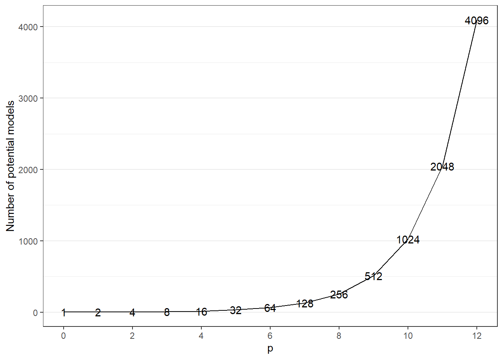
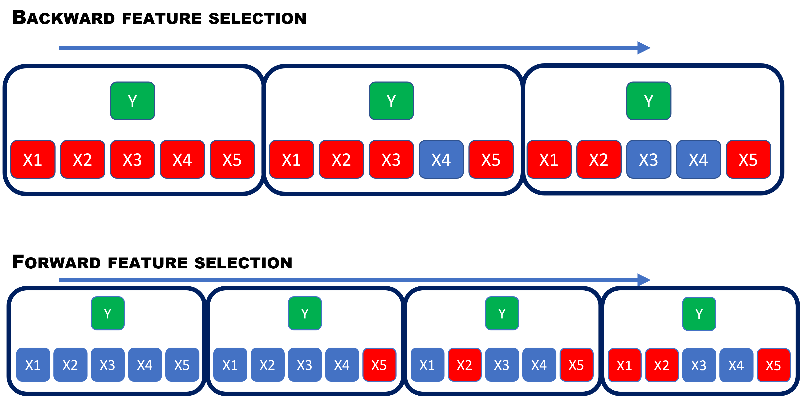

9 Feature selection
Feature selection is the process of reducing the number of predictors when developing a predictive model. The primary focus is on removing those predictors that are non-informative to the model. If a predictor does not influence your response variable it may improve the performance of your model to simply remove it. It may also reduce the computational cost of fitting the model to have fewer covariates to take into account.
There are many ways of doing feature selection and there is no “best method.” In small cases, one could perhaps try all combinations of predictor permutations, but the number of models to test then will increase substantially with the number of columns in your data. If we have four predictors, there are four combinations with only 1 predictor, six combinations for 2 predictors, 4 with 3 and one with 4 predictors. In total 16, if we also add the model with no predictors. The general formula for this with \(p\) predictors would be \[\text{number of potential models} = \sum_{i=0}^p \binom{p}{i}=2^p,\] where the last equality holds by the binomial theorem (see wikipedia). We can plot this for \(p = 0,\ldots, 12\), where \(p=0\) corresponds to the intercept model.
library(tidyverse)
tibble(p =0:12, n = 2^p) %>%
ggplot(aes(x=p,y=n)) +
geom_line() +
geom_text(aes(x=p, y = n, label = n)) +
scale_x_continuous(breaks = seq(0,30,2)) +
scale_y_continuous(name = "Number of potential models") +
theme_bw() +
theme(panel.grid.major.x = element_blank(),
panel.grid.minor.x = element_blank())
If we increase \(p\) to say 20, the number of potential models is \(1\,048\,576\). Therefore, we need a clever way of selecting features without having to test every combination. The rest of this lecture will be about different ways of selecting features to include in your model.
Backward feature selection
Backward feature selection is a procedure where you start with a complicated model with all potential features included. When considering the features, there will be some that are more important than others in the model. Like an onion, you start peeling off the least important feature and fit a new model without it. Then evaluate the model and find the next least important feature. Finding the least important feature is usually done by fitting new models removing one feature at the time and then select remove the feature that is most beneficial with respect to the performance measure. If the removal of the feature lead to an improvement in the model fit, you continue peeling. If it decreased the model performance, you stop peeling and go back to the previous model. Due to this step-by-step procedure, it is often called backward stepwise feature selection.
In classical statistical modeling, minimizing AIC is a standard way of doing model selection. It minimizes the prediction error, while punishing complex models with many features. In a simple generalized linear model, using AIC as measure of model performance, a standard backward model selection would be to fit the model with all features included, then fit models removing one feature at the time and calculate AIC for those candidates, select the one with the lowest AIC. Removing one parameter will make the model more parsimonious (less complex), but also decrease the flexibility of the model to fit the data better. AIC is then meant to balance these two opposing interest in a good way.
Forward feature selection
If backward feature selection means starting with a full model using all covariates available, then forward selection must mean starting with no features. This is in fact the case. Instead of starting with the full model and look for the least important feature as in backward feature selection, we start with a intercept-only model and in each iteration, we look for the single feature that will improve our model the most. This means we must run through all potential new features to be added, and select the one that improves the model performance measure the most. This is continued until no new feature candidates improve the model fit.
In the figure below, we illustrate the difference between backward and forward selection. The red color means features selected and blue are not selected for the X-es. As you see the forward feature selection takes more steps, but also each step is more computational.

Recursive feature elimination
This is a greedy optimization algorithm which aims to find the best feature subset in terms of model performance. It creates models repeatedly by taking out the best and worst performing feature and continues with the ones that are left. The procedure is repeated until there is no features left. It then ranks the features based on their order of elimination. This will be illustrated in the exercises.
9.1 Example
Let us now look at how this can be executed in R on a example. The adult dataset contains information on 48 842 adults and whether or not their income exceeds USD 50.000. The data is published by github user guru99-edu and downloaded from github. We will use a logistic regression model and do feature selection using backward and forward stepwise feature selection. The features are
- age
- workclass (e.g. private sector, local government, never-worked, etc.)
- education (highest level education level completed)
- educational.num (numeric version fo the above)
- gender
- marital status
- race
- hours.per.week
For the sake of the example the details about the features is not so important, but it will be interesting to see if we end up selecting the same features using the different approaches.
library(tidyverse)
data_adult <-read.csv("https://raw.githubusercontent.com/guru99-edu/R-Programming/master/adult.csv")
data_adult <- mutate(data_adult,
workclass = factor(workclass),
education = factor(education),
marital.status = factor(marital.status),
race = factor(race),
gender = factor(gender),
income = factor(income)) %>%
select(-x)
glimpse(data_adult)## Rows: 48,842
## Columns: 9
## $ age <int> 25, 38, 28, 44, 18, 34, 29, 63, 24, 55, 65, 36, 26, 58, 48, 43, 20, 43, 37, 40, 34, 34, 72, 25,~
## $ workclass <fct> Private, Private, Local-gov, Private, ?, Private, ?, Self-emp-not-inc, Private, Private, Privat~
## $ education <fct> 11th, HS-grad, Assoc-acdm, Some-college, Some-college, 10th, HS-grad, Prof-school, Some-college~
## $ educational.num <int> 7, 9, 12, 10, 10, 6, 9, 15, 10, 4, 9, 13, 9, 9, 9, 14, 10, 9, 9, 16, 13, 10, 4, 13, 13, 9, 9, 9~
## $ marital.status <fct> Never-married, Married-civ-spouse, Married-civ-spouse, Married-civ-spouse, Never-married, Never~
## $ race <fct> Black, White, White, Black, White, White, Black, White, White, White, White, White, White, Whit~
## $ gender <fct> Male, Male, Male, Male, Female, Male, Male, Male, Female, Male, Male, Male, Female, Male, Male,~
## $ hours.per.week <int> 40, 50, 40, 40, 30, 30, 40, 32, 40, 10, 40, 40, 39, 35, 48, 50, 25, 30, 20, 45, 47, 35, 6, 43, ~
## $ income <fct> <=50K, <=50K, >50K, >50K, <=50K, <=50K, <=50K, >50K, <=50K, <=50K, >50K, <=50K, <=50K, <=50K, >~We start by fitting a full logistic regression model with all covariates included:
full_mod <- glm(income ~ ., data = data_adult, family = binomial(link = "logit"))
summary(full_mod)##
## Call:
## glm(formula = income ~ ., family = binomial(link = "logit"),
## data = data_adult)
##
## Deviance Residuals:
## Min 1Q Median 3Q Max
## -2.7049 -0.5688 -0.2543 -0.0703 3.3515
##
## Coefficients: (1 not defined because of singularities)
## Estimate Std. Error z value Pr(>|z|)
## (Intercept) -7.935941 0.236015 -33.625 < 2e-16 ***
## age 0.029900 0.001218 24.541 < 2e-16 ***
## workclassFederal-gov 1.420617 0.104491 13.596 < 2e-16 ***
## workclassLocal-gov 0.789196 0.092966 8.489 < 2e-16 ***
## workclassNever-worked -7.849767 89.422236 -0.088 0.93005
## workclassPrivate 0.891468 0.081278 10.968 < 2e-16 ***
## workclassSelf-emp-inc 1.307273 0.100092 13.061 < 2e-16 ***
## workclassSelf-emp-not-inc 0.293183 0.090353 3.245 0.00118 **
## workclassState-gov 0.599916 0.102549 5.850 4.92e-09 ***
## workclassWithout-pay -0.602072 0.800921 -0.752 0.45222
## education11th 0.142405 0.163843 0.869 0.38476
## education12th 0.550194 0.201383 2.732 0.00629 **
## education1st-4th -1.077687 0.384596 -2.802 0.00508 **
## education5th-6th -0.457775 0.235211 -1.946 0.05163 .
## education7th-8th -0.467006 0.180613 -2.586 0.00972 **
## education9th -0.305767 0.204467 -1.495 0.13480
## educationAssoc-acdm 1.900402 0.136195 13.954 < 2e-16 ***
## educationAssoc-voc 1.717694 0.131599 13.052 < 2e-16 ***
## educationBachelors 2.615693 0.121632 21.505 < 2e-16 ***
## educationDoctorate 3.717102 0.162183 22.919 < 2e-16 ***
## educationHS-grad 1.034718 0.120284 8.602 < 2e-16 ***
## educationMasters 3.093768 0.128050 24.161 < 2e-16 ***
## educationPreschool -1.587742 1.024289 -1.550 0.12112
## educationProf-school 3.759084 0.151998 24.731 < 2e-16 ***
## educationSome-college 1.547119 0.121455 12.738 < 2e-16 ***
## educational.num NA NA NA NA
## marital.statusMarried-AF-spouse 2.335361 0.384067 6.081 1.20e-09 ***
## marital.statusMarried-civ-spouse 2.102725 0.050028 42.031 < 2e-16 ***
## marital.statusMarried-spouse-absent 0.087831 0.157033 0.559 0.57594
## marital.statusNever-married -0.471977 0.061285 -7.701 1.35e-14 ***
## marital.statusSeparated -0.106535 0.118860 -0.896 0.37009
## marital.statusWidowed -0.077235 0.110240 -0.701 0.48355
## raceAsian-Pac-Islander 0.215697 0.179562 1.201 0.22966
## raceBlack 0.214721 0.171228 1.254 0.20984
## raceOther 0.133020 0.242955 0.548 0.58403
## raceWhite 0.482408 0.163494 2.951 0.00317 **
## genderMale 0.108124 0.037490 2.884 0.00393 **
## hours.per.week 0.030386 0.001190 25.544 < 2e-16 ***
## ---
## Signif. codes: 0 '***' 0.001 '**' 0.01 '*' 0.05 '.' 0.1 ' ' 1
##
## (Dispersion parameter for binomial family taken to be 1)
##
## Null deviance: 53751 on 48841 degrees of freedom
## Residual deviance: 35554 on 48805 degrees of freedom
## AIC: 35628
##
## Number of Fisher Scoring iterations: 11As you can see, there is lots of features that are not statistically significant by having a p-value above 5%, although this is not a big concern for us. We are searching for the model with the best prediction performance in terms of Akaike’s information criterion (AIC). We start by doing a downward feature selection with the step function included in the base R package stats. When only specifying the full model to the step function, it will perform backward stepwise feature selection by default.
back_mod <- stats::step(full_mod)## Start: AIC=35628.5
## income ~ age + workclass + education + educational.num + marital.status +
## race + gender + hours.per.week
##
##
## Step: AIC=35628.5
## income ~ age + workclass + education + marital.status + race +
## gender + hours.per.week
##
## Df Deviance AIC
## <none> 35554 35628
## - gender 1 35563 35635
## - race 4 35601 35667
## - workclass 8 36002 36060
## - age 1 36164 36236
## - hours.per.week 1 36226 36298
## - education 15 40586 40630
## - marital.status 6 41221 41283Here you can follow the steps and see all the candidate models with what value of AIC they have. Here we actually stop after just one iteration - the only feature being removed is the educational.num. The best alternative in the final iteration is to do no changes in what features to include. The model we end up with can be printed by:
summary(back_mod)##
## Call:
## glm(formula = income ~ age + workclass + education + marital.status +
## race + gender + hours.per.week, family = binomial(link = "logit"),
## data = data_adult)
##
## Deviance Residuals:
## Min 1Q Median 3Q Max
## -2.7049 -0.5688 -0.2543 -0.0703 3.3515
##
## Coefficients:
## Estimate Std. Error z value Pr(>|z|)
## (Intercept) -7.935941 0.236015 -33.625 < 2e-16 ***
## age 0.029900 0.001218 24.541 < 2e-16 ***
## workclassFederal-gov 1.420617 0.104491 13.596 < 2e-16 ***
## workclassLocal-gov 0.789196 0.092966 8.489 < 2e-16 ***
## workclassNever-worked -7.849767 89.422236 -0.088 0.93005
## workclassPrivate 0.891468 0.081278 10.968 < 2e-16 ***
## workclassSelf-emp-inc 1.307273 0.100092 13.061 < 2e-16 ***
## workclassSelf-emp-not-inc 0.293183 0.090353 3.245 0.00118 **
## workclassState-gov 0.599916 0.102549 5.850 4.92e-09 ***
## workclassWithout-pay -0.602072 0.800921 -0.752 0.45222
## education11th 0.142405 0.163843 0.869 0.38476
## education12th 0.550194 0.201383 2.732 0.00629 **
## education1st-4th -1.077687 0.384596 -2.802 0.00508 **
## education5th-6th -0.457775 0.235211 -1.946 0.05163 .
## education7th-8th -0.467006 0.180613 -2.586 0.00972 **
## education9th -0.305767 0.204467 -1.495 0.13480
## educationAssoc-acdm 1.900402 0.136195 13.954 < 2e-16 ***
## educationAssoc-voc 1.717694 0.131599 13.052 < 2e-16 ***
## educationBachelors 2.615693 0.121632 21.505 < 2e-16 ***
## educationDoctorate 3.717102 0.162183 22.919 < 2e-16 ***
## educationHS-grad 1.034718 0.120284 8.602 < 2e-16 ***
## educationMasters 3.093768 0.128050 24.161 < 2e-16 ***
## educationPreschool -1.587742 1.024289 -1.550 0.12112
## educationProf-school 3.759084 0.151998 24.731 < 2e-16 ***
## educationSome-college 1.547119 0.121455 12.738 < 2e-16 ***
## marital.statusMarried-AF-spouse 2.335361 0.384067 6.081 1.20e-09 ***
## marital.statusMarried-civ-spouse 2.102725 0.050028 42.031 < 2e-16 ***
## marital.statusMarried-spouse-absent 0.087831 0.157033 0.559 0.57594
## marital.statusNever-married -0.471977 0.061285 -7.701 1.35e-14 ***
## marital.statusSeparated -0.106535 0.118860 -0.896 0.37009
## marital.statusWidowed -0.077235 0.110240 -0.701 0.48355
## raceAsian-Pac-Islander 0.215697 0.179562 1.201 0.22966
## raceBlack 0.214721 0.171228 1.254 0.20984
## raceOther 0.133020 0.242955 0.548 0.58403
## raceWhite 0.482408 0.163494 2.951 0.00317 **
## genderMale 0.108124 0.037490 2.884 0.00393 **
## hours.per.week 0.030386 0.001190 25.544 < 2e-16 ***
## ---
## Signif. codes: 0 '***' 0.001 '**' 0.01 '*' 0.05 '.' 0.1 ' ' 1
##
## (Dispersion parameter for binomial family taken to be 1)
##
## Null deviance: 53751 on 48841 degrees of freedom
## Residual deviance: 35554 on 48805 degrees of freedom
## AIC: 35628
##
## Number of Fisher Scoring iterations: 11As you can see from the output, we kept age, workclass, education, marital.status, race, gender, hours.per.week and intercept. Let’s see what the forward algorithm will end up with.
To do the forward feature seleciton, we also need the intercept only model.
interceptOnly_mod <- glm(income ~ 1, data = data_adult, family = binomial(link = "logit"))
forward_mod <- stats::step(interceptOnly_mod, scope=list(lower=interceptOnly_mod, upper=full_mod), direction="forward")## Start: AIC=53752.68
## income ~ 1
##
## Df Deviance AIC
## + marital.status 6 43120 43134
## + education 15 47517 47549
## + educational.num 1 47775 47779
## + hours.per.week 1 51160 51164
## + age 1 51214 51218
## + gender 1 51266 51270
## + workclass 8 52242 52260
## + race 4 53196 53206
## <none> 53751 53753
##
## Step: AIC=43134.15
## income ~ marital.status
##
## Df Deviance AIC
## + education 15 37334 37378
## + educational.num 1 37478 37494
## + hours.per.week 1 42025 42041
## + workclass 8 42284 42314
## + age 1 42687 42703
## + race 4 42954 42976
## + gender 1 43039 43055
## <none> 43120 43134
##
## Step: AIC=37377.94
## income ~ marital.status + education
##
## Df Deviance AIC
## + hours.per.week 1 36614 36660
## + workclass 8 36843 36903
## + age 1 36915 36961
## + gender 1 37230 37276
## + race 4 37264 37316
## <none> 37334 37378
##
## Step: AIC=36659.86
## income ~ marital.status + education + hours.per.week
##
## Df Deviance AIC
## + age 1 36055 36103
## + workclass 8 36249 36311
## + race 4 36559 36613
## + gender 1 36583 36631
## <none> 36614 36660
##
## Step: AIC=36102.83
## income ~ marital.status + education + hours.per.week + age
##
## Df Deviance AIC
## + workclass 8 35611 35675
## + race 4 36013 36069
## + gender 1 36041 36091
## <none> 36055 36103
##
## Step: AIC=35675.15
## income ~ marital.status + education + hours.per.week + age +
## workclass
##
## Df Deviance AIC
## + race 4 35563 35635
## + gender 1 35601 35667
## <none> 35611 35675
##
## Step: AIC=35634.83
## income ~ marital.status + education + hours.per.week + age +
## workclass + race
##
## Df Deviance AIC
## + gender 1 35554 35628
## <none> 35563 35635
##
## Step: AIC=35628.5
## income ~ marital.status + education + hours.per.week + age +
## workclass + race + gender
##
## Df Deviance AIC
## <none> 35554 35628The model we end up with is
summary(forward_mod)##
## Call:
## glm(formula = income ~ marital.status + education + hours.per.week +
## age + workclass + race + gender, family = binomial(link = "logit"),
## data = data_adult)
##
## Deviance Residuals:
## Min 1Q Median 3Q Max
## -2.7049 -0.5688 -0.2543 -0.0703 3.3515
##
## Coefficients:
## Estimate Std. Error z value Pr(>|z|)
## (Intercept) -7.935941 0.236015 -33.625 < 2e-16 ***
## marital.statusMarried-AF-spouse 2.335361 0.384067 6.081 1.20e-09 ***
## marital.statusMarried-civ-spouse 2.102725 0.050028 42.031 < 2e-16 ***
## marital.statusMarried-spouse-absent 0.087831 0.157033 0.559 0.57594
## marital.statusNever-married -0.471977 0.061285 -7.701 1.35e-14 ***
## marital.statusSeparated -0.106535 0.118860 -0.896 0.37009
## marital.statusWidowed -0.077235 0.110240 -0.701 0.48355
## education11th 0.142405 0.163843 0.869 0.38476
## education12th 0.550194 0.201383 2.732 0.00629 **
## education1st-4th -1.077687 0.384596 -2.802 0.00508 **
## education5th-6th -0.457775 0.235211 -1.946 0.05163 .
## education7th-8th -0.467006 0.180613 -2.586 0.00972 **
## education9th -0.305767 0.204467 -1.495 0.13480
## educationAssoc-acdm 1.900402 0.136195 13.954 < 2e-16 ***
## educationAssoc-voc 1.717694 0.131599 13.052 < 2e-16 ***
## educationBachelors 2.615693 0.121632 21.505 < 2e-16 ***
## educationDoctorate 3.717102 0.162183 22.919 < 2e-16 ***
## educationHS-grad 1.034718 0.120284 8.602 < 2e-16 ***
## educationMasters 3.093768 0.128050 24.161 < 2e-16 ***
## educationPreschool -1.587742 1.024289 -1.550 0.12112
## educationProf-school 3.759084 0.151998 24.731 < 2e-16 ***
## educationSome-college 1.547119 0.121455 12.738 < 2e-16 ***
## hours.per.week 0.030386 0.001190 25.544 < 2e-16 ***
## age 0.029900 0.001218 24.541 < 2e-16 ***
## workclassFederal-gov 1.420617 0.104491 13.596 < 2e-16 ***
## workclassLocal-gov 0.789196 0.092966 8.489 < 2e-16 ***
## workclassNever-worked -7.849767 89.422236 -0.088 0.93005
## workclassPrivate 0.891468 0.081278 10.968 < 2e-16 ***
## workclassSelf-emp-inc 1.307273 0.100092 13.061 < 2e-16 ***
## workclassSelf-emp-not-inc 0.293183 0.090353 3.245 0.00118 **
## workclassState-gov 0.599916 0.102549 5.850 4.92e-09 ***
## workclassWithout-pay -0.602072 0.800921 -0.752 0.45222
## raceAsian-Pac-Islander 0.215697 0.179562 1.201 0.22966
## raceBlack 0.214721 0.171228 1.254 0.20984
## raceOther 0.133020 0.242955 0.548 0.58403
## raceWhite 0.482408 0.163494 2.951 0.00317 **
## genderMale 0.108124 0.037490 2.884 0.00393 **
## ---
## Signif. codes: 0 '***' 0.001 '**' 0.01 '*' 0.05 '.' 0.1 ' ' 1
##
## (Dispersion parameter for binomial family taken to be 1)
##
## Null deviance: 53751 on 48841 degrees of freedom
## Residual deviance: 35554 on 48805 degrees of freedom
## AIC: 35628
##
## Number of Fisher Scoring iterations: 11The selected features are marital.status, education, hours.per.week, age, workclass, race, gender, and intercept - same as for the backward feature selection.
In the exercises you will also learn about recursive feature elimination and how to implement this using the caret package.
Data camp
We highly recommend the data camp course Supervised Learning in R: Classification " chapters 1-3. (ch 3, video on automatic feature selection).